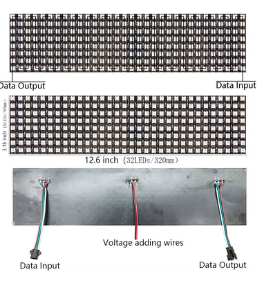

Os LEDs endereçáveis são uma nova geração de LEDs, pois incluem um chip controlador, geralmente o WS2812,
que permite acessar vários LEDs com um único pino digital, atribuindo um endereço a cada LED e fornecendo
uma comunicação por fio.
Os paineis de Leds endereçaveis são organizados em foma de zig zag de 8 em 8 leds formando uma matrix 8x32,
com duas podemos fomar um letreiro
A conexão é simples temos um GND, um 5v e um sinal de comunicação D0 que ligaremos no porta 6

depois basta abrir o programa Arduino IDE e baixar as bibliotecas Adafrui_NeoPixel e Adafrui_NeoMatrix
Agora basta modificar o cadigo da seguinte forma
na linha Adafruit_NeoMatrix matrix = Adafruit_NeoMatrix(64, 8, PIN, coloque a configuração da matrix, nosso caso 64 por 8,
caso sua matriz for maior troque, 64 numeros de colunas e 8 numeros de linhas
depois da linha Adafruit_NeoMatrix matrix = Adafruit_NeoMatrix(64, 8, PIN, modificar NEO_MATRIX_RIGHT para
NEO_MATRIX_LEFT e acrescentar + NEO_MATRIX_ZIGZAG para que as letra se mova da direta para esquerta e
configure a organização dos LEDs que é em zig zag, na linha if(--x < -136) { coloque um valor e vai verificando
se passa toda mensagem caso nao amente o número e vice-versa
Desta foma terá o letreiro com a seguinte mensagem PROJETO LER TAMBEM E VIAJAR caso mudar a mensagem
basta mudar no campo acima Obs: não colocar acentos, desconfigura